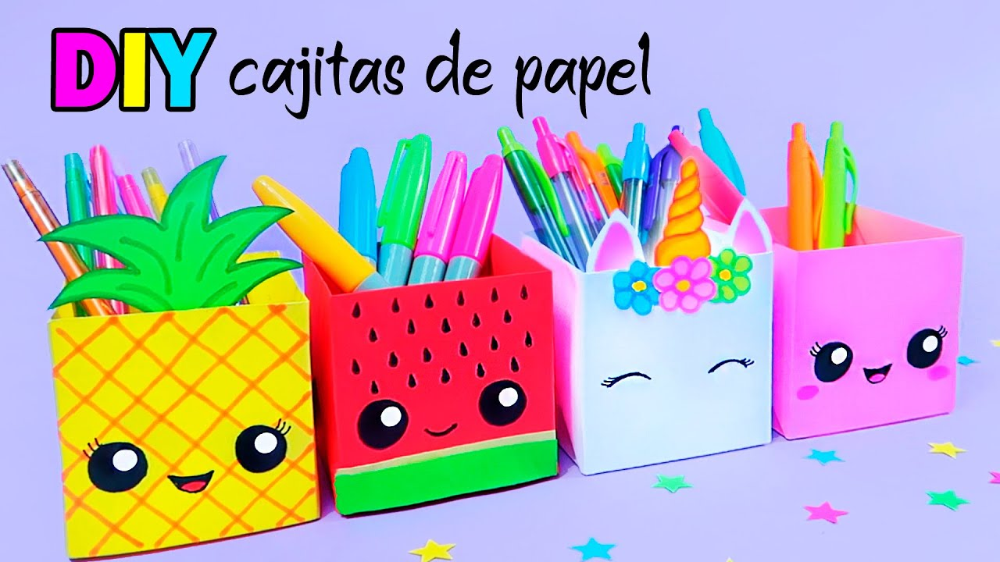

Que es lo que mas te gusta sobre manualidades?
Ahora despues de saber que tipo de manualidades te gustaria mas, te muestro unos trabajos manuales a continuacion 
Manualidades con cartulina: puedes usacr cartulinas en laminas o en otros tamaños para realizar unas bonitas cajitas de regalo ya sea para la venta o para regalar a tus seres queridos
Manualidad con lana: puede comenzar buscando modelos en internet y puedes hacer de diferentes maneras, es una bonita forma de entretenimiento y a la vez poder ganar dinerito extra, a continuacion te dire que manualidades puedes realizar con lana